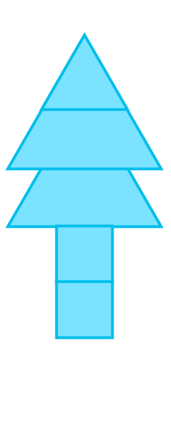
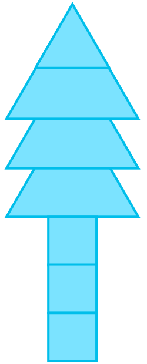
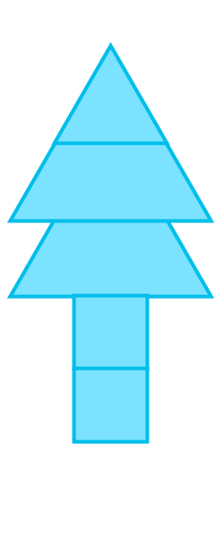
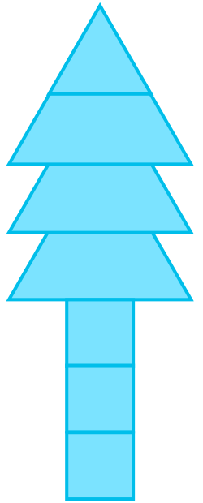

- 문제
- 계획
- 실행
- 반성
-
-
-
-
모양 자를 사용하여 규칙에 맞게 모양을 만들어 보세요. 준비물 191, 193쪽
예 예 예첫째 둘째 셋째 나만의
모양 
 -
사용된 도형과 도형의 수를 표로 정리해 보세요.
첫째 둘째 셋째 삼각형111사각형123정사각형123
-
-
표를 보고 도형의 수에서 알 수 있는 규칙을 이야기해 보세요.
-
예
삼각형 개수는 바뀌지 않고 사각형과 정사각형이 1개씩 늘어나고 있습니다.
모양의 배열을 완성한 후 만든 방법을 친구들에게 설명해 보세요.
-
예
사각형과 정사각형이 1개씩 늘어나는 나무 모양을 만들었습니다.
-
예